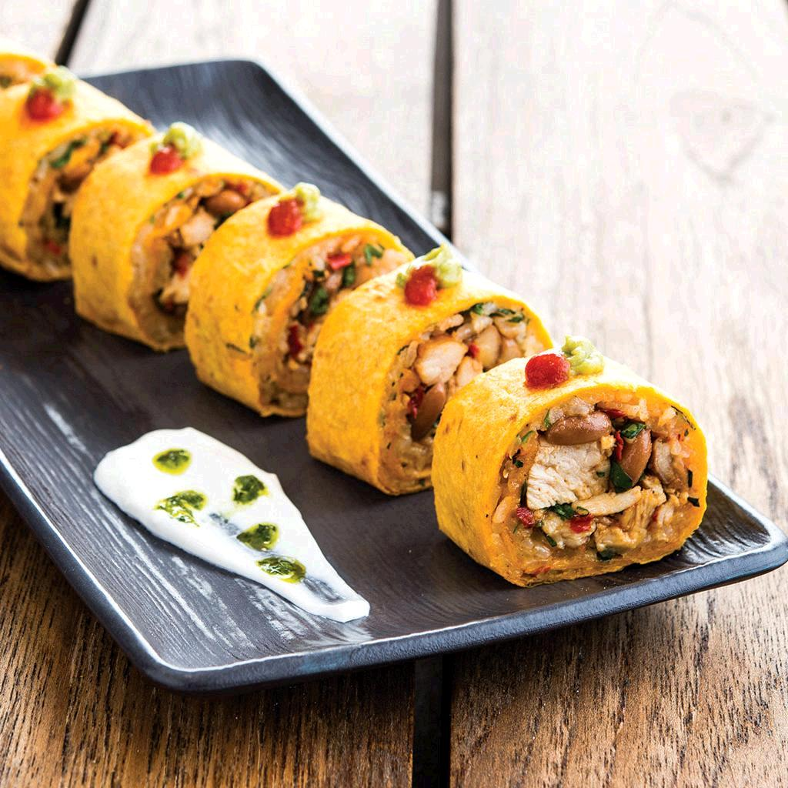

Roberto's Famous Japanese Sushi

Description
This recipe has been passed down from generations of Roberto's family restaurant called Roberto's Burrito and Sushi place. Roberto has kindly shared his famous sushi recipe below. You may be wondering how a non-Japanese person can make good sushi. Let me ask you this- Isn't Sushi just a Japanese Burrito?
Ingredients
- Fresh Tuna or Salmon
- Nori Seaweed Wrap or Burrito Shell
- Cooked Rice
- Mayonnaise
- Siracha
- Avacado
Steps
- Slice the fish in thin 1 inch length strips.
- Take the seaweed wrap or burrito shell and spread a thin layer of rice on it.
- Spread some mayonnaise and siracha on it.
- Fold in the sides and tightly roll it.
- Slice the Sushi into bite size circles.